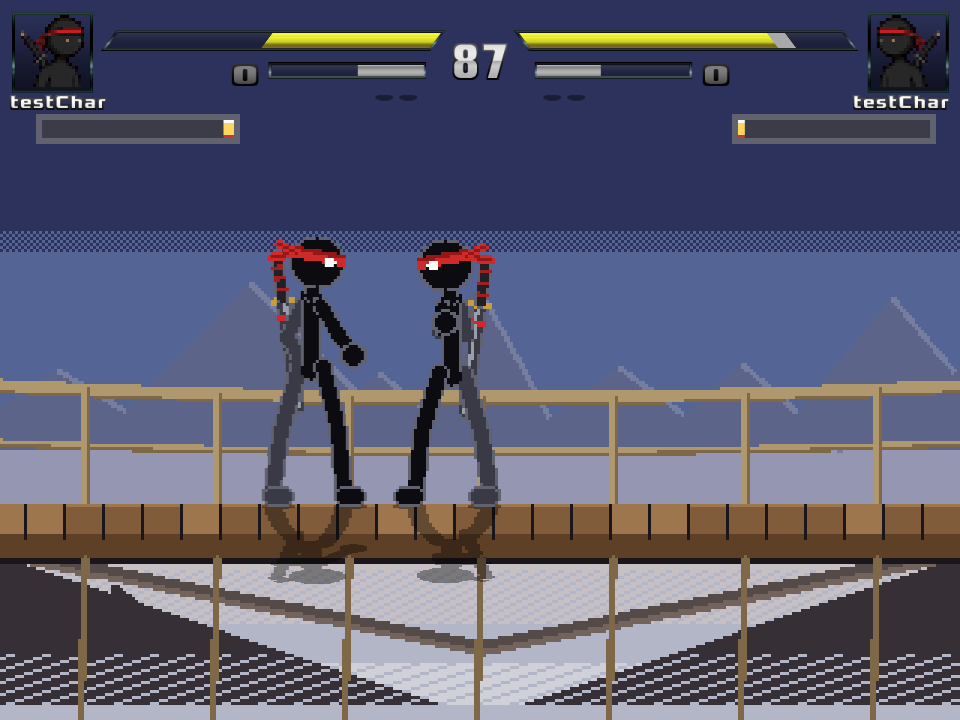
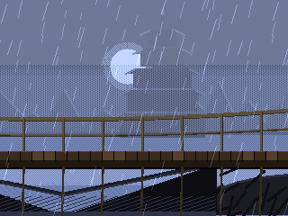
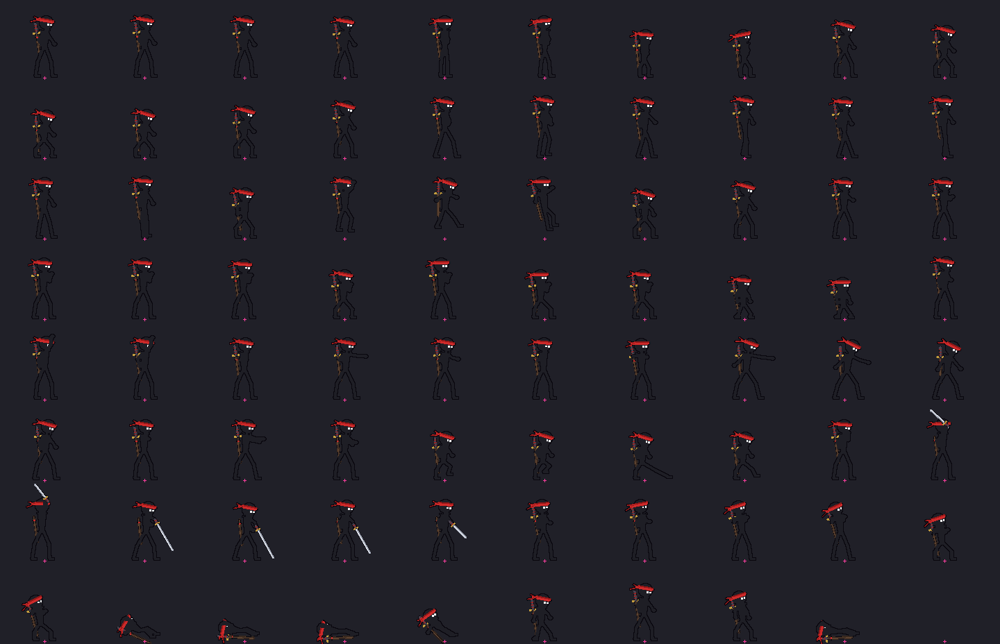

Fighting game · Ikemen GO · Solo
Sword Saint: Broken Bridge
A mirror match on a bridge in a storm. Two fighters share one seven-move kit, so the match is won on timing and meter, not character choice.

- Role
- Solo designer: characters, moveset, combat systems and stage
- Team
- Solo
- Engine
- Ikemen GO (open-source fighting game engine)
- Tools
- Ikemen GO · Fighter Factory Studio · Notepad++
- Status
- Design project · no public build yet
In 30 seconds
- The game
- A one-on-one fighter. The Sword Saint faces Unknown, a mirror fighter on the same moveset, on a storm-lit bridge.
- My part
- All of the design: both characters, the seven-move kit, block, perfect block, stamina, and the Broken Bridge stage.
- Evidence
- In-engine capture, stage art and the character sprite sheet below. No public build, tuning values or playtest notes yet.
The kit
Seven moves, shared by both fighters.
The Sword Saint and Unknown use the same moveset. Unknown is a mirror fighter, so every tool one player has, the other has too.
| Move | Type | What it asks of the player |
|---|---|---|
| Four normals | Attack | The everyday buttons both fighters build their game from. |
| Lightning special | Special | Two projectiles from one special move. |
| Super | Super | Meter-gated: it has to be earned during the round before it can be spent. |
| Back dash | Movement | A fast way out of range. |
Defence
Blocking with a timing layer.
- Block
- Holding block is the safe default.
- Timed perfect block
- A block timed to the incoming attack counts as a perfect block, separate from simply holding block. It rewards timing, not just holding the button.
- Stamina
- A stamina system sits alongside the kit.
Not yet documented Tuning values, frame data and playtest notes for these systems aren't documented yet.
Stage
Broken Bridge.
A six-layer storm stage with animated lightning and rain. The fight takes place on the bridge deck, with the storm behind it.


Characters
The Sword Saint and Unknown.
Both fighters share one body plan and one moveset. The sheet covers idle, walking, attacks, the sword draw and knockdowns.
